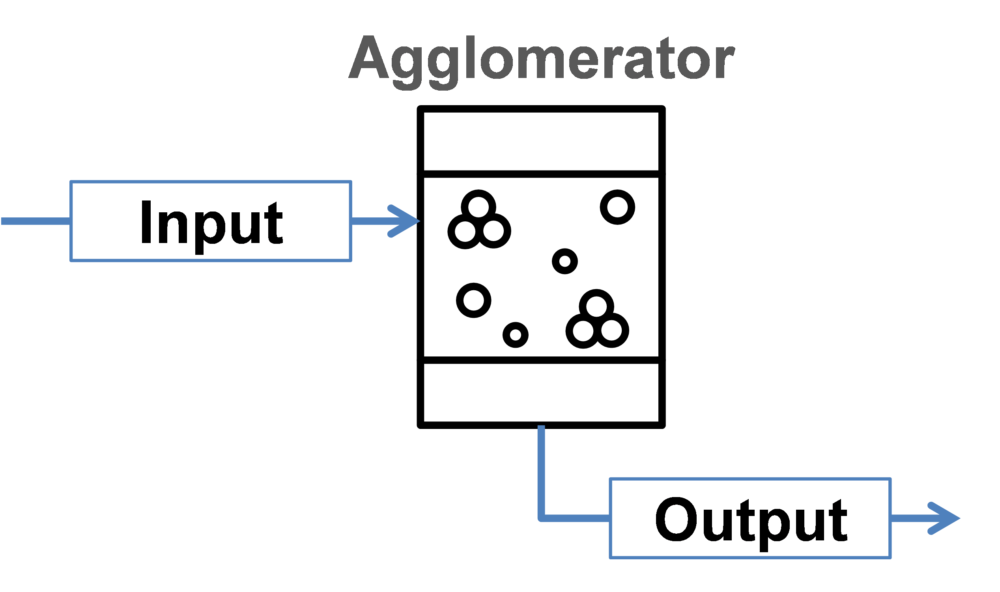

Agglomerator
This unit represents a simplified model of agglomeration process, see figure below.
{kind=link}

The model does not take into account attrition of particles inside the apparatus and does not keep properly any secondary distributed property except size.
Mass related density distribution of output stream is calculated according to following equations:
Note
Notations:
– volumes of agglomerating particles
– number density function
, – number density functions of inlet and outlet streams, correspondingly
, – birth and death rates of particles with volume caused due to agglomeration
– agglomeration rate constant, dependent on operating conditions but independent from particle sizes
– the agglomeration kernel, see section Kernels.
– time
– mass flow in the input stream
– mass flow in the output stream
Note
solid phase and particle size distribution are required for the simulation.
The method of calculating and is determined by the selected solver via unit parameter Agglomeration solvers.
Note
Input parameters needed for the simulation:
Name |
Symbol |
Description |
Units |
Boundaries |
|---|---|---|---|---|
Beta0 |
Size independent agglomeration rate constant |
[–] |
0 < Beta0 ≤ |
|
Step |
– |
Maximum time step of internal DAE solver. Default value is 0. |
[–] |
0 ≤ Step ≤ |
Solver |
– |
Solver used to calculate birth and death rates |
[–] |
– |
Kernel |
– |
Agglomeration kernel type, must be an integer |
[–] |
0 ≤ Kernel ≤ 9 |
Rank |
– |
Rank of the kernel (applied for FFT solver only), must be an integer |
[–] |
1 ≤ Rank ≤ 10 |
See also
a demostration file at Example Flowsheets/Units/Agglomerator.dlfw.
See also
V.Skorych, M. Dosta, E.-U. Hartge, S. Heinrich, R. Ahrens, S. Le Borne, Investigation of an FFT-based solver applied to dynamic flowsheet simulation of agglomeration processes, Advanced Powder Technology 30 (3) (2019), 555-564.
Kernels
The agglomeration kernels are applied to describe the agglomeration frequency between particles of volumes and , which produce a new particle with the size . In Dyssol environment, 10 types of kernels are numbered with integers from 0 to 9, as listed below.
Number
Name
Kernel equation
0
Constant
1
Sum
2
Product
3
Brownian
4
Shear
5
Peglow
6
Coagulation
7
Gravitational
8
Kinetic energy
9
Thompson
Solvers
Currenly, several Agglomeration solvers are available in Dyssol. Please refer to Solver library for more information about the solvers.